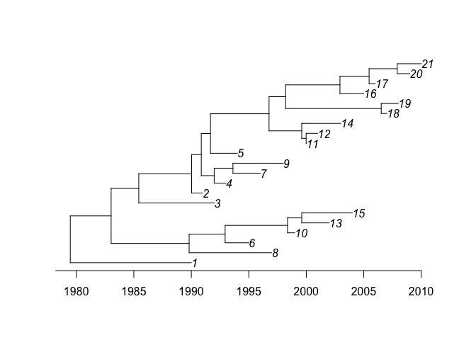

The goal of BactDating is to perform Bayesian dating of the nodes of a bacterial phylogenetic tree. This typically involves simultaneous Bayesian estimation of the molecular clock rate and coalescent rate. Additional features include inference of root location, lost sampling dates and different evolutionary models.
Installation
You can install BactDating from github with:
devtools::install_github("xavierdidelot/BactDating")The package can then be loaded using:
library(BactDating)Example
This is a basic example of usage. First we generate a coalescent tree with a single leaf per year between 1990 and 2010:
tree=simcoaltree(1990:2010)
plot(tree)
ape::axisPhylo(backward=F)
Next we generate an observed phylogeny based on this timed tree, and perform a root-to-tip analysis:

We can run the dating analysis on this phylogeny as follows:
res=bactdate(obsphy,1990:2010)
plot(res,'treeCI')
More information and getting help
For more detailed examples of how to use BactDating, see the vignettes here. See also the help included in the package using the R command help(package='BactDating').
If you have any problem or question please create an issue here or get in touch by emailing xavier.didelot@gmail.com